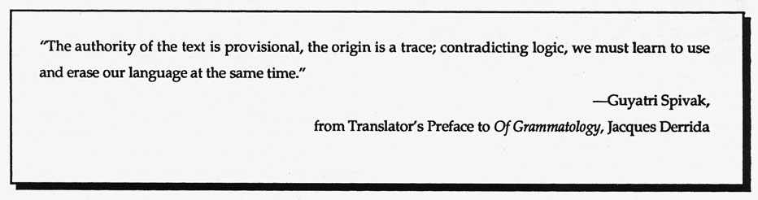
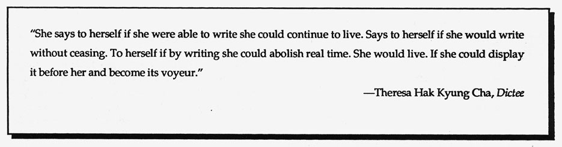

.endnotes
Editor's Notes
Dead words. Dead tongue. From disuse. Buried in Time's
memory. Unemployed. Unspoken. History. Past. Let the one
who is diseuse, one who is mother who waits nine days and
nine nights be found.
Restore memory. Let the one who is diseuse, one
who is daughter restore spring with her each ap-
pearance from beneath the earth.
The ink spills thickest before it runs dry before it
stops writing at all.
 --from
Dictee,
p. 133
--from
Dictee,
p. 133
It is with particular sadness that we re-print work from Theresa Hak Kyung Cha's Dictee, having developed an interest in doing so at least a year before learning of her tragic, irrational death. Cha's restoration of Korean family history in Dictee, her private journey out of silence--accompanied by the heroines of her imagination--keeps her perspective vividly with us.
•
Erasure: 1. a scratching out; obliteration; 2. the place where a word or letter has been erased; 3. the act of razing or destroying to the foundation; total destruction as, the erasure of cities.
As HOW(ever) moves into its final year with Volume V (the first issue appearing in May, 1983), it seems appropriate to look again at the profound erasure actively and passively carried out by American literary institutions towards the majority of women writers contributing to the modernist project. It was this negligence of the brilliant and original writings of figures such as Lorine Niedecker, Mina Loy, and Jane Bowles--denying us access to an on-going tradition of female innovation in poetry and prose--that prompted the making of this journal. By 1983, Stein, Woolf, H.D., and Moore were finally being seriously reconsidered by feminist scholars, yet the reality and necessity of the innovative perspective--being actively practiced by contemporary women poets--was seriously eroded and undermined by disregard. If there was hostility or simply wary bafflement among scholars and critics, we have hoped to engage productively with that resistance by asking our contributing poets to write "Working Notes" for their texts--brief descriptions of the project's germination and how that was translated into its formal making. We've also believed that by asking women poets (as well as scholars) to write about the works of other women, certain of the puzzling pieces might fall into place or, at the least, alert an active curiosity.
•
HOW(ever), ISSN 0895-5-5743, is available in a fifth series of four numbers. For libraries interested in purchasing the complete series, beginning with Vol. I, we have a limited number of archival sets. Archival sets cost $12 per volume for individuals; $15 for institutions. Subscriptions for Vol. IV cost $8 for individuals; $10 for institutions. Individual copies of HOW(ever), often asked for as "sample copies," are available at $2.50 each from Small Press Distribution, 1814 San Pablo, Berkeley, CA 94702. Subscription checks to HOW(ever), c/o Fraser, 1936 Leavenworth, San Francisco, California 94133.

